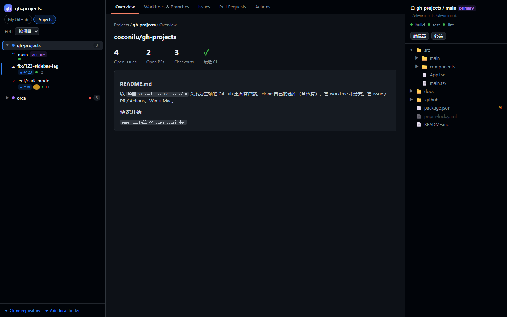
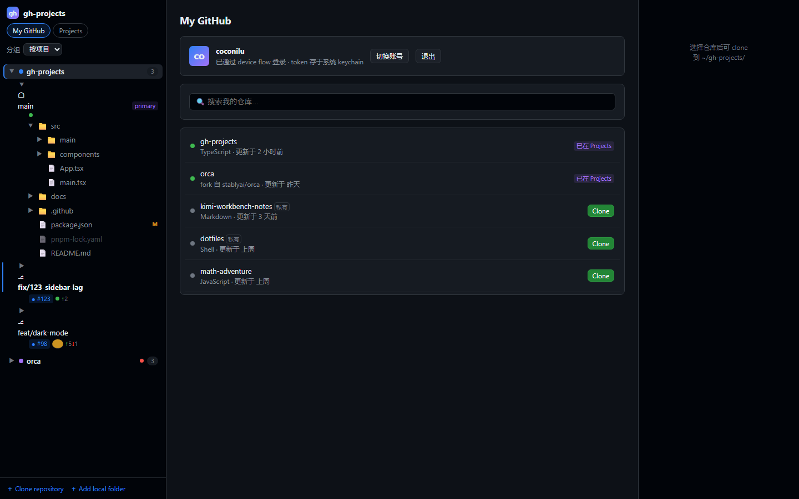
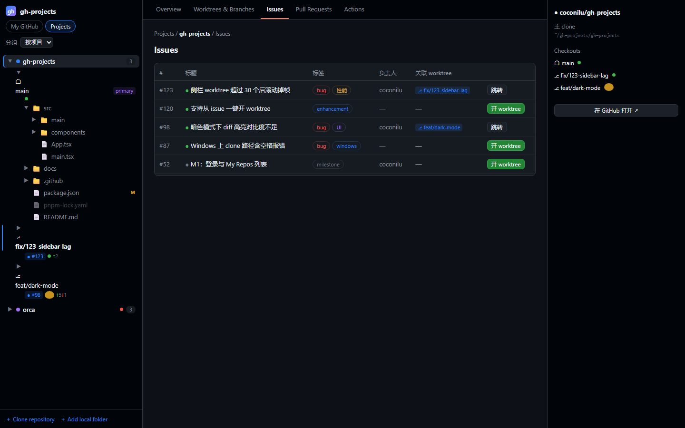
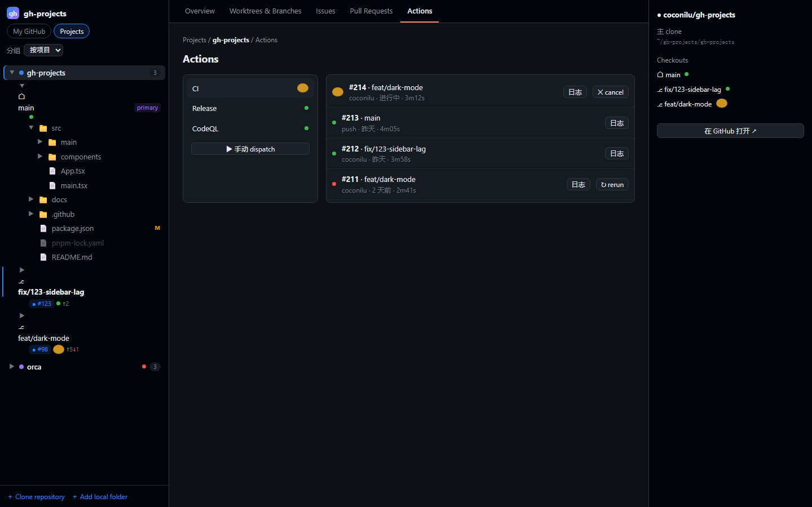

以「项目 ↔ worktree ↔ issue/PR」关系为主轴的 GitHub 桌面客户端。
clone 仓库、并行 worktree、Issues / PRs / Actions，一个应用全闭环。

GitHub Desktop 把 worktree 当配角、不管 Actions；Orca 的 worktree 最强但定位是 AI agent 编排器。「GitHub 账号 → 仓库 → clone → worktree → issue/PR → CI」的全链路闭环，目前还没有人做。
列出你的全部仓库（含私有），按最近活动排序，一键 clone 到约定目录并自动注册为项目。
主 clone 与 worktree 平级展示，新建/删除/锁定，在编辑器、终端、文件管理器中打开，删除走回收站。
从 issue 或 PR 直接开 worktree，自动建分支并持久化关联；已有 worktree 时一键跳转。
workflow 列表、run 历史、日志、手动 dispatch、rerun/cancel，不开网页就能管 CI。
右侧懒加载文件树，git status 角标，单击预览 Markdown、双击进编辑器。
一键把项目或 worktree 在 Codex / Kimi Code 中打开，凭证全程不出 Rust 主进程。
暗色优先，遵循 GitHub Primer 设计语言 —— 用起来就像 GitHub 本身。



从 Releases 下载 Windows（NSIS）或 macOS（dmg）安装包，用 GitHub PAT 登录（repo + workflow scope）；本机 gh CLI 已登录则自动复用 token。应用内置自动更新。
# 源码构建
pnpm -C app install
pnpm -C app tauri dev # 开发模式
pnpm -C app tauri build # 打包